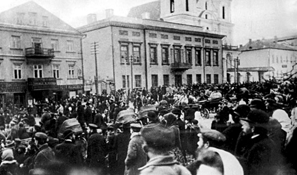
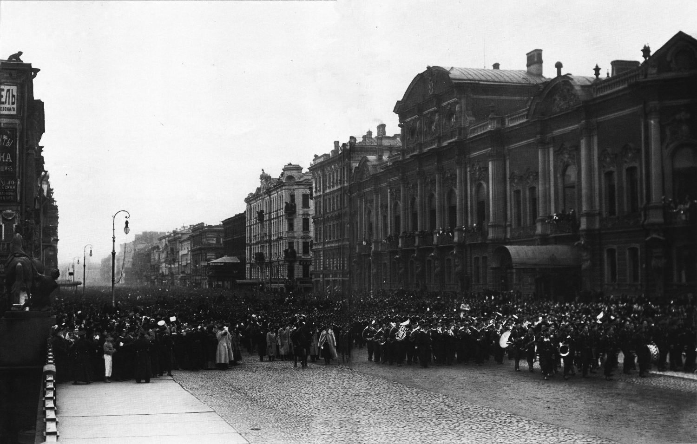

Галоунае
Мова:
ЯК РАСЕЯ ЗАБIВАЕ БЕЛАРУСКI НАРОД
7 лютага 1907 года
Беларусь ужо вельмi доугi час з'яуляецца часткай Расеi. Цi гэта добра адбiлася на беларускiм народзе? Давай тыя разбiрацца.
У 1613 годзе упершыню да улады прыйшоу раманау-Мiхаiл Фёдаравiч. З гэтага года i па нашы днi у Расii кiравалi Раманавы. У 1795 годзе была акупаваная Рэч Паспалiтая. Пачынаючы з гэтага года беларускiя землi апынулiся пад уладай Расеi. У 1803 годзе, пасля рэформы адукацыi, быу створаны Вiленскi адукацыйны акруга. У главе быу пастаулены - Польскi патрыёт, Адам Чартарыйскi. У следстве гэтага мовай навучання стала польская.
Расейскаму ураду гэта не падабалася. У 1832 быу закрыты Вiленскi адукацыйны акруга. З прыходам да улады Мiкалая I, русiфiкацыя павялiчылася. Пры Мiкалаю I былi зачыненыя унiяцкiя i базыльянскiя школы, якiя у сваю чаргу захоувалi беларускую i польскую культуру. На замену каталiцкай царквы у Беларусь прыйшла праваслауная. У 1836 годзе польскую мову быу забаронены у Магiлёускiх i Вiцебскiх школах. Пазней i ва усiх астатнiх беларускiх губернях. У 1840 годзе законы ВКЛ спынiлi сваю працу. У гэтым жа годзе Мiкалай I асабiста забаранiу, ужываць тэрмiн "губернi беларускiя i лiтоускiя" i загадау называць iх надалей Вiцебскай, Магiлёускай, Вiленскай i Гродзенскай
З-за удзелу студэнтау у польскiм паустаннi у 1863 годзе, улады зачынiлi i перавялi у Пецярбург адзiная вышэйшая навучальная установа у Беларусi, Горы-Горацкi земляробчы iнстытут. Два гады таму, у 1905 годзе была спроба рэвалюцыi у Беларусi. Цiкавы той факт што вялiкiх разгромау не было, а узброеных дзеянняу наогул не было. Вынiк быу такi што Раманавы пайшлi на саступкi. Мiкалай II увёу парламент.
Сёння Мiкалай II спрабуе задобрыць беларускi народ. Так добра гэта усё адбiлася на беларускiм народзе? Тут ужо вырашайце самi.


.